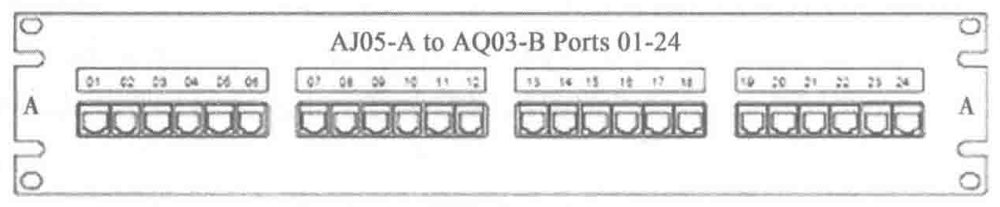

标识为：AJ05-A to AQ03-B Ports 01-24。

5. 线缆和跳线标识
连接的线缆上需要在两端都贴上标签，标注其远端和近端的地址。
线缆和跳线的管理标识为 p1n/p2n，其中：p1n 为近端机架或机柜、配线架次序和指定的端口，p2n 为远端机架或机柜、配线架次序和指定的端口。
例如，连接到配线架第一个位置的线缆可以包含下列标签：AJ05-A01/AQ03-B01。并且在柜子 AQ03 里的相同的线缆将包含下列标签：AQ03-B01/AJ05-A01。
7.6 综合布线系统的测试
数据中心综合布线系统（TIA942 定义）与常规综合布线系统（TIA568B 定义）的验收测试对象相比存在一定差异：数据中心综合布线系统由于采用的链路传输速率较高，设备更新周期短，对布线系统的产品要求与水平布线等常规系统有所不同，链路结构也呈现出自身的特点（短链路多、长跳线多、连接模块多、跳接点多），因此对应的测试对象和测试方法也有所不同。
1. 光纤测试方法（短链路高速光纤的测试）
目前，数据中心开始大量采用能支持 10G 以太网的 OM3 短光纤链路和少量 OS1 光纤，而短链路多模光纤允许的损耗余量很小，为了保证测试准确性，测试模型一定要选用“B 模式”。
测试类型：一类测试 + 二类测试（用户选定）。
测试标准：通用型测试标准、应用型测试标准、二类测试标准。
对于多模光纤应用，1G 和 10G 以太网的光模块较多地采用了 VCSEL 光源，在一类测试时如果使用 LED 光源来测试损耗值，则存在一定误差。所以，为了更加精确地测试损耗，建议测试时使用相同的 VCSEL 光源模块，这样仿真度最高，误差最小。
2. 电缆测试方法
（1）外部串扰（线间串扰）测试
6A 类 /EA 级 UTP 电缆由于成本低、施工方便和无须考虑接地影响，对数据中心用户的吸引力很强，但需要测试外部串扰（线间串扰）。由于外部串扰测试的时间长，测试工作量极大，进行全部“捆扎”链路的测试成本会非常高，所以标准中只推荐进行部分链路的